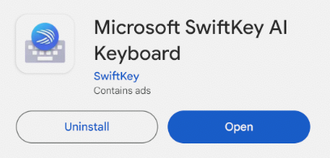
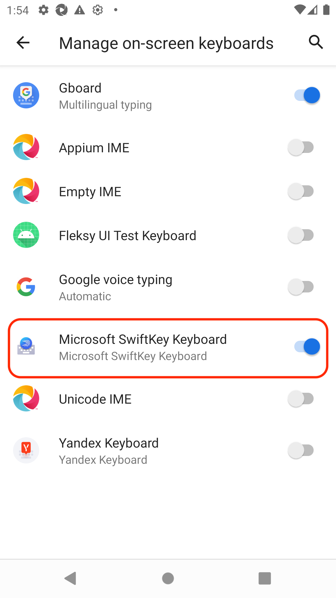
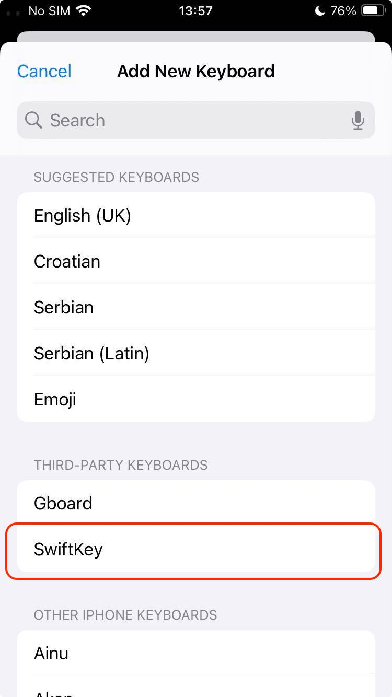
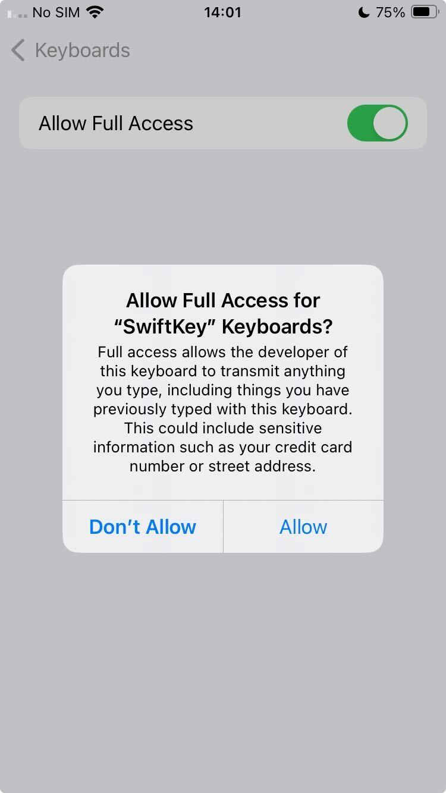

Test a new keyboard
To be able to test a keyboard not supported yet by Kebbie you will need to do some steps before run the tests.
Device setup
To get the elements of the keyboard to be able to map the keys and then evaluate the keyboard you need to have Appium 2 correctly installed and the emulator ready.
So you need to:
- Setup Appium by following the emulator setup documentation.
- Setup the emulator by following the emulator setup documentation.
Installing the keyboard on the device
First of all install the APK manually if you have the file locally or download it from the app the store:

Once it's installed, if it hasn't any setup wizard, access to the on-screen keyboard settings to enable and select it.
Example for Android:

Example for iOS:

Warning
On iOS keyboards you will need to allow the full access permission.

Add a new keyboard to Kebbie
Add the name of the new keyboard in the available choices in the cmd.py file.
Example:
choices = ["newKeyboard", "gboard", "tappa", "ios", "kbkitpro", "fleksy"]
Add it in the file emulator.py file.
Example:
NEWKEYBOARD = "newkeyboard"
And in the instantiate_correctors list in the cmd.py file if it's an Android keyboard.
Then add it the KEYBOARD_PACKAGE list in the emulator.py file to automatically select it before the keys mapping or the keyboard evaluation and to filter the page source if you want to map the keys.
Tip
To get the package of the new keyboard, once it's installed on the device, just run the command adb shell pm list packages -3 | cut -f 2 -d ":" and search it in the list.
Get full keyboard locators
Run the command kebbie get_page_source -K newKeyboard on your code. The device will open a web browser and show the keyboard currently selected. After that, the system will get all the locators on screen and save them in an XML file.
Tip
If you have set the keyboard package, you will get the information automatically filtered by the keyboard locators to find the keys and suggestions easier.
Note
You can show that information directly on console just adding the parameter --print_page_source or -P to the get_page_source command.
Important
If there is no keyboard package set, or it is not found in the data gathered, the system will save the whole page source without filtering it.
Once you have all the locators related with the keyboard, find the root element of the keyboard, the keyboard keys and suggestions elements.
Tip
You can usually find the keys by the content-desc or the text of their elements, if not, try to find the resource-id value.
Tip
To find the suggestions easier, type something with the keyboard to show up the suggestions just before get the page source, then you will be able to find the locators by searching the text of those suggestions.
Get the keyboard layout
Create a layout detector class with the keyboard name adding the methods to get the root, the keys and the suggestions (see the GboardLayoutDetector class for an example).
Example copying and editing the Gboard layout detector:
class NewKeyboardLayoutDetector(LayoutDetector):
"""Layout detector for the NewKeyboard keyboard. See `LayoutDetector` for more
information.
"""
def __init__(self, *args, **kwargs):
super().__init__(
*args,
xpath_root=f"./*/*[@package='{KEYBOARD_PACKAGE[NEWKEYBOARD]}']",
xpath_keys=".//*[@resource-id][@content-desc]",
**kwargs,
)
def get_suggestions(self) -> List[str]:
"""Method to retrieve the keyboard suggestions from the XML tree.
Returns:
List of suggestions from the keyboard.
"""
suggestions = []
sections = [
data
for data in self.driver.page_source.split("<android.widget.FrameLayout")
if KEYBOARD_PACKAGE[NEWKEYBOARD] in data
]
for section in sections:
if "content-desc" in section and "resource-id" not in section and 'long-clickable="true"' in section:
m = re.search(r"content\-desc=\"([^\"]*)\"", section)
if m:
content = m.group(1)
# Deal with emojis
emoji = re.match(r"emoji (&[^;]+;)", content)
suggestions.append(html.unescape(emoji[1]) if emoji else content)
return suggestions
Important
If there is any content in the keyboard that you want to ignore from the mapping, add it in the CONTENT_TO_IGNORE dictionary in the kebbie/emulator.py file (e.g. "Gallery").
Important
If there is any content in the keyboard that you want to map with another name, add it in the CONTENT_TO_RENAME dictionary in the kebbie/emulator.py file (e.g. "Find": "enter").
Finally, in the __init__ method in the kebbie/emulator.py file, add the name of the keyboard in the Get the the right layout section to run its layout detector and add the keyboard to the error handling.
Example:
elif self.keyboard == NEWKEYBOARD:
self.detected = NewKeyboardLayoutDetector(self.driver, self._tap)
self.layout = self.detected.layout
else:
raise ValueError(
f"Unknown keyboard : {self.keyboard}. Please specify {NEWKEYBOARD}, {GBOARD}, {TAPPA}, "
f"{FLEKSY}, {KBKITPRO}, {KBKITOSS} or {IOS}."
)
Test the new keyboard with Kebbie
First check the key mapping running the command kebbie show_layout -K newkkeyboard.
Tip
If the keys mapping fails trying to get the numbers layout, add a print(self.driver.page_source) before the method self.tap(layout["lowercase"]["numbers"] and launch the command again to get the key to switch to numbers adding it in the CONTENT_TO_RENAME list (e.g. "Digit keyboard": "numbers").
Finally, evaluate the keyboard with the command kebbie evaluate -K newkeyboard and wait until the evaluation is finished to get the results.
Note
See "How testing is done?" to know the internal process performed.